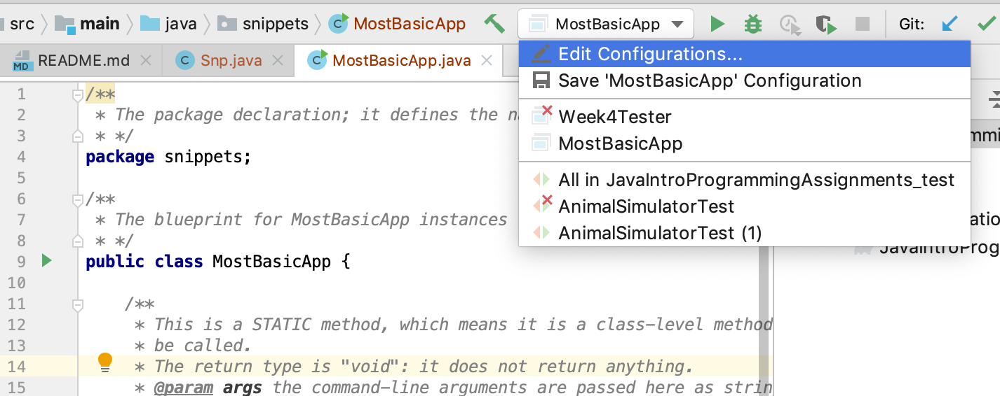
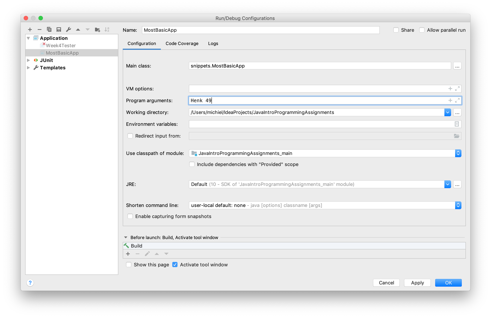

Basic program structure and flow
Basic program structure and flow. Advanced flow (switch etc) will be described later.
Basic program structure
As stated before, a Java program must have a main() method as starting point.
This main() method needs to reside in a class, because all Java code needs to live inside a class.
/**
* The package declaration; it defines the namespace of this class
* */
package snippets;
public class MostBasicApp {
/**
* This is a STATIC method, which means it is a class-level method and needs no object/instance to
* be called.
* The return type is "void": it does not return anything.
* @param args the command-line arguments are passed here as string array
*/
public static void main(String[] args) {
System.out.println("Basic App has started");
System.out.println("...and ended");
}
}
This is a very uninteresting app of course, since it doesn't do anything. Let's extend it with a bit of functionality. We'll pass the program 2 arguments: one for age and one for user name. If no arguments are provided, we'll print some usage information.
To pass command-line arguments within IntelliJ, you need to create or edit a run configuration. If you have run the main before (by clicking on the green triangle - see post intelliJ), you click on the toolbar run configurations box and select "Edit configurations"- see screenshot.

The only thing yu need to do now is enter two "Program arguments". Here, I filled out "Henk" and "49", with a space between them.

An array (which is kind of a list) of String elements called args will be passed to main() as String[] args. This array will hold the command line arguments when next running the program, as demonstrated below.
public static void main(String[] args) {
for (String arg : args) {
System.out.println("arg = " + arg);
}
}
This will output
arg = Henk arg = 49
Here you hae seen the first program flow construct in action: the foreach loop. It is equivalent to for-loops in any programming language: it iterates a collection of some sort. Here the collection is an array. Note it does not have a counter; there is a different variant of the for loop for that.
Let's introduce one other flow construct: decisions with if/else.
Suppose you want to give your user some uplifting message, depending on their age. First the age argument needs to be converted from String to int:
/**
* Use indexing to access array elements
*/
String name = args[0];
/**
* Parse String into int
*/
int age = Integer.parseInt(args[1]);
System.out.println("Hi " + name + ", your age is " + age);
Next, the choice of message needs to be made.
if(age < 18) {
System.out.println("ahh the energy of youth");
} else if (age < 50) {
System.out.println("nice to meet somebody in the prime of their life!");
} else {
System.out.println("hey, don't worry - every day brings you closer to retirement");
}
The classic elements of the if/else decision block.
Finally, let's bring a dedicated object into play: the message maker. The class looks like this:
package snippets;
public class MessageMaker {
private final String name;
private final int age;
/**
* Constructor makes it mandatory to instantiate with name and age arguments.
* @param name
* @param age
*/
public MessageMaker(String name, int age) {
this.name = name;
this.age = age;
}
public void printMessage() {
System.out.println("Hi " + name + ", your age is " + age);
if(age < 18) {
System.out.println("ahh the energy of youth");
} else if (age < 50) {
System.out.println("nice to meet somebody in the prime of their life!");
} else {
System.out.println("hey, don't worry - every day brings you closer to retirement");
}
}
}
And this is how you instantiate and use an object of such a class.
public class MostBasicApp {
public static void main(String[] args) {
String name = args[0];
int age = Integer.parseInt(args[1]);
/*A first object is instantiated and a method is called on it.*/
MessageMaker messageMaker = new MessageMaker(name, age);
messageMaker.printMessage();
}
}
So, here we have a two-class application. Both source files are in the same package (namespace). The first is the so-called "main class" which is the entry point of the application: MostBasicApp in source file MostBasicApp.java. The main method receives the command-line arguments and parses one of them into an integer. Next, it instantiates a MessageMaker object and calls its printMessage() method.
Summary
You have seen the basic structure of a Java program. It needs at least one source file with one class. There needs to be a main() method of this signature to be executable as program:
public static void main(String[] args) {
//startup code
}
Two flow control structures were shown: the for-each loop and if/else decisions:
//foreach
for(item : collection) {}
//if/else
if(conditionIsTrue) {}
else if(alternativeConditionIsTrue){}
else {/*default logic*/}
That's it. Next up: Data Types.